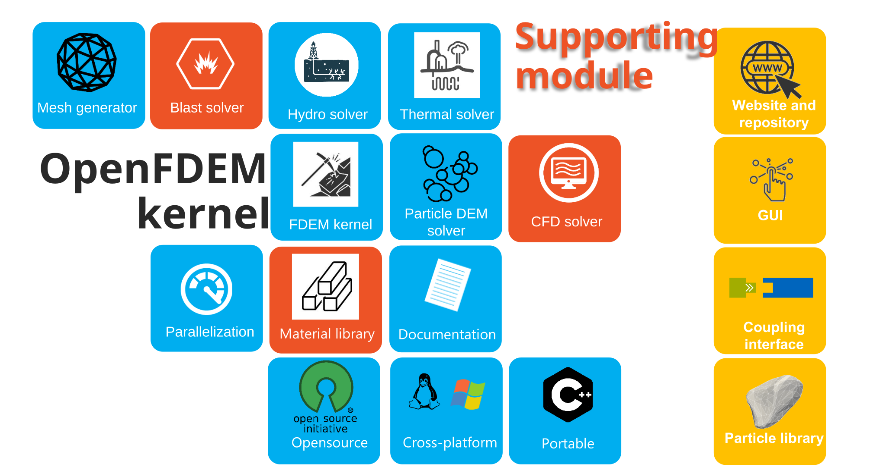
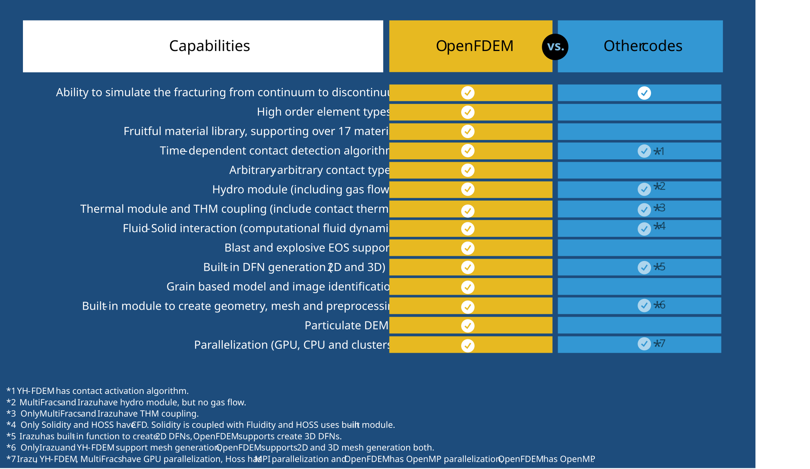

What is OpenFDEM#
OpenFDEM (open-source Hybrid Finite-Discrete Element Method, also named Open-source Combined Finite-Discrete Element Method) is a scientific software for the numerical solution of partial differential equations, is also open to other coupling of physical problems such as thermal transportation, hydro flowing, fluid dynamics and rigid collision, etc. This open-source library is primarily based on Finite-Discrete Element Method, and now is a more general solver, which allows an efficient computation of FEM, DEM, particulate DEM, phase-field and CFD problems.
General#
Object Oriented Architecture (C++ and CUDA®)#
The main feature of OpenFDEM is the use of modern C++ object-oriented programming, and the organization of data structure defining
from the explicit input keywords. It consists of a working environment in which any problem is defined using a certain number of objects, which makes
it approachable and easy to use at both the development and application levels as the initial intention.
the environment structured and concise.
Thus, it provides researchers with advanced development tools and great freedom to add new features.
Modular & Extensible FEM and DEM Kernel#
Fully extendable and portable - The kernel can be extended in any “direction”. Adding new element types, new materials with any element types and internal history parameters, new boundary conditions (time-dependent, position-dependent, state-dependent, periodic and flow-in/out)
or numerical algorithms (explicit and implicit) is possible, as well as the ability to add and manage arbitrary degrees of freedom is a matter of course.
(OpenFDEM is intended to be a more general FEM/DEM solver compatible with arbitrary scenarios.) Like other general open-source FEM solvers, the most important
feature of OpenFDEM is its standardization and generality, which allows the continuum-discontinuum method to be used with more general scenarios. The limitation of this project is the developers’ thoughts, rather than the method itself.

OpenFDEM feature#
Highly accurate and reliable - The kernel provides high-order integration schemes and solving methods to seek more reliable numerical results which are comparable to theoretical solutions. The element type has a maximum order of three to accurately reproduce the large deformation behavior whithin the entity, and the new kinematic scheme to construct a nonlinear deformation. The Hilber-Hughes-Taylor (HHT) time integration scheme (second-order accuracy) is used for the explicit solver.
OpenFDEM supports 26 element types and 24 materials.
Friendly preprocessing interface - The Gmsh is implemented to easily create meshes from computer-aided design (CAD),
geometry file or third-party commercial software. The built-in commands are accessible to create many basic geometries
(e.g. rectangular, circle, ellipse, polygon, line and particles) and initial discontinuities (e.g. single joint, joint sets,
DFNs and DFNs from image mapping). This built-in mesh module can quickly assess mesh quality and identify the local bad meshes
which will be further optimized by node swap, node insertion, node delete, element split techniques, automatically or manually. Meanwhile,
for very complex geometric models, users can also import mesh files from third-party software. OpenFDEM supports importing standard mesh files,
such as .geo, .msh, .inp, .stl, .dxf, .iges, .pos and .step, etc. Principally, the geometry file can be processed by Gmsh can also be done by OpenFDEM.
Parallel processing support - Most modules can be operated in parallel and very good performance scalability on various platforms.
Instead of using no binary searching (NBS) contact method in OpenFDEM, a new element-wise contact searching algorithm with a
complexity of O(NlogN) is proposed to make the contact searching process parallelable. The GPU acceleration will be open shortly.
Mesh adaptive analysis support - Local adaptive mesh refinement (lAMR) and global adaptive mesh refinement(gAMR) are provided in OpenFDEM
for mesh optimization and accuracy enhancement. Based on different remeshing criteria, OpenFDEM supports various error estimations, such as primary unknown,
internal variables mapping, high-accuracy internal variable interpolation and fast unbalance equilibrium after refinement. The AMR supports fracture path consistent before and after remeshing.

Global adaptive mesh refinement (up-left) and local adaptive mesh refinement (down-right) in OpenFDEM.#
Flowing mesh refined based on the stress level in the bar.
Rich grain-based modelling support - Voronoi tessellations can be created with the built-in Voronoi module. The optimization is deployed to match the laboratorial mineral distribution from measurements or digital image. The realistic grain-based model (GBM) can be reproduced directly in the project by inputting the binary sample images. The polygonal element type is available for representing the whole mineral individually. Furthermore, transgranular fracturing can be realized by element splitting techniques.
OpenFDEM implements a Voronoi lib and is able to simulate grains directly based on polygonal elements.
Large material library - currently,
OpenFDEM supports 17 element materials (including elastic, hyperelastic, plastic, damage, nonlocal, viscous and phas—field models), 7 cohesive materials (spanning static, dynamic and fatigue problems),
and 6 contact models (including Mohr-coulomb friction, hertz contact, rate friction, rough dilation shear law and so on).

New material library in OpenFDEM.#
Phasefield module with adaptive mesh refinement in OpenFDEM.
Advanced analysis solvers - Linear dynamic solver (implicit and explicit), linear static solver (PETSC), eigenvalue problem (SLEPc), and nonlinear dynamic solver (explicit) are applicable for different problems, the implicit solver currently can be run on Linux-like OS.
Particle Discrete Element Method (pDEM)#
Rigid DEM support - built-in module for rigid particles packing, kinematics and collision, the particle-based contact models include linear, Hertz, cohesive bond and rotation resistance model.

Sand compression test with membrane (left) and irregular deformable and breakable particles packing (right).#
Realistic Particle Modelling - Overlapping particles and Fourier-Voronoi-based algorithm are used to generate realistic particles having complex shapes. The realistic particles can be rigid or deformable. The breakage of the particles are also possible.

Debris flow of rigid particles due to gravity (left) and debris flow of irregular deformable fragments due to gravity (right, .stl file from Itasca).#
Fluid Dynamic Module#
Analysis Procedures - matrix flow for pore seepage, transient incompressible fracture flow, transient compressible fracture flow and gas flow problems.

Blast considering gas expansion, gas flow by hydro module (left) and without gas expansion by mechanical module (right) ((Wang et al. 2021, 2022)).#
Element Library - triangle, quadratic triangle, quadrilateral and quadratic quadrilateral element types are supported for Newtonian fluid and Bingham fluid.
Fluid injection in fractured rock block (left), Water flowing in a tube using CFD in hydro module (right)
Boundary Types - water level, pore pressure, flow rate, steady flow and impermeable boundary conditions are supported in hydro module.
Thermal Transportation Module#
Analysis Procedures - matrix thermal transportation, thermal resistance in fractures, heat conduction of fluid in fracture, heat advection of fluid, heat exchange between solid and fluid and contact thermal problems.

Gabbro fracturing after microwave treatment in thermal module.#
Element Library - triangle, quadratic triangle, quadrilateral and quadratic quadrilateral element types are supported.
Boundary Types - constant temperature, flux, conduction, advection, radiation, source and adiabatic thermal conditions are supported.
Computational Fluid Dynamics#
Material Point Method (MPM) - is used to simulate the fluid transportation and large deformation. This mesh-free method does not encounter the drawbacks of mesh-based methods (high deformation tangling, advection errors etc.) which makes it a promising and powerful tool for large deformation problems. The coupling between FDEM and MPM makes the solid interacting with fluid possible.
Tap water flow into a tank, MPM + FDEM.
Kármán vortex street example, periodic boundary.
Miscellaneous#
Post-Processing
Export to VTK format is supported, allowing to use VTK based visualization tools (such as ParaView) for postprocessing on different operating platforms.
Export to Tecplot format is supported.
Export historic variables which are monitored at each step to
.csvis supported.
Third-Party Packages Used in OpenFDEM
GMSH- 2D and 3D mesh generatorGSL- mathematical routinesEigen- matrix calculationPETSC- Portable, Extensible Toolkit for Scientific ComputationParaView- Parallel Visualization Application (for.vtkfiles)
Documentation#
The documentation is auto-generated from the .of and .rst files throughout
the codebase and the extensive comments in the source code .h and .of files. Sphinx is used to compile
the documentation in HTML and PDF formats.